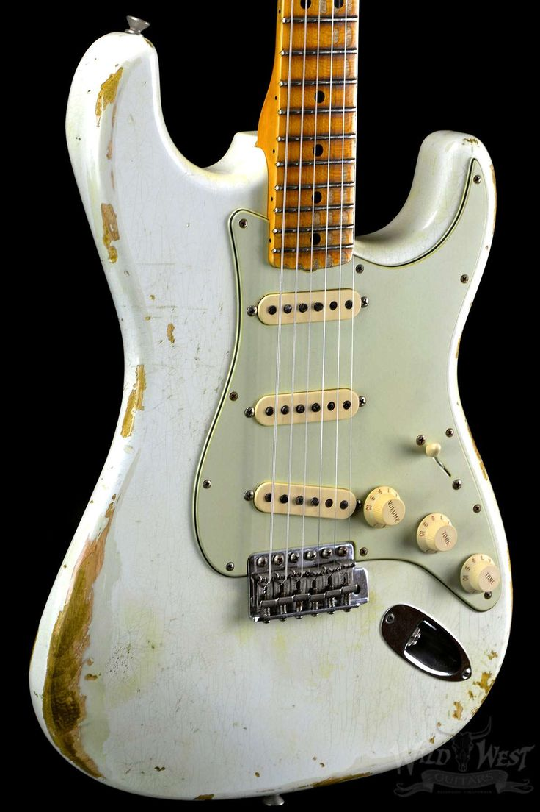
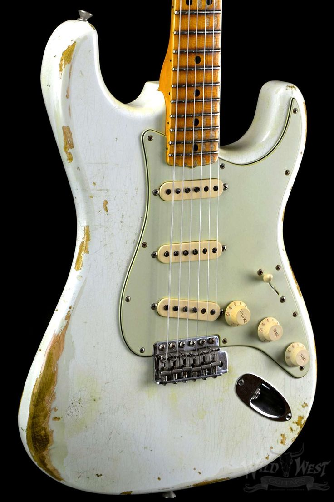

Hail To The Strat Partcaster
The Strat is the most versatile guitar for mods.
 


A Modding Platform
The Strat was designed to be easily mass produced. Because of this it is also easy for other manufacturers to recreate this iconic instrument. Today aftermarket companies like Warmoth, USA Custom Guitars and AllParts to name a few are serve guitar player who love to tinker.
One of the main reasons the Strat lends itself to mods is the size of the pickguard.
The Most Important Component
Besides bodies and necks other companies have sprung up to meet the demand of musicians looking for a different sound. Bill Lawrence founder of Wilde Pickups was one of the pioneers of aftermarket pickups. Seymour Duncan Company and DiMarzio Inc. are also two companies who have decades of experience manufacturing amazing guitar pickups.